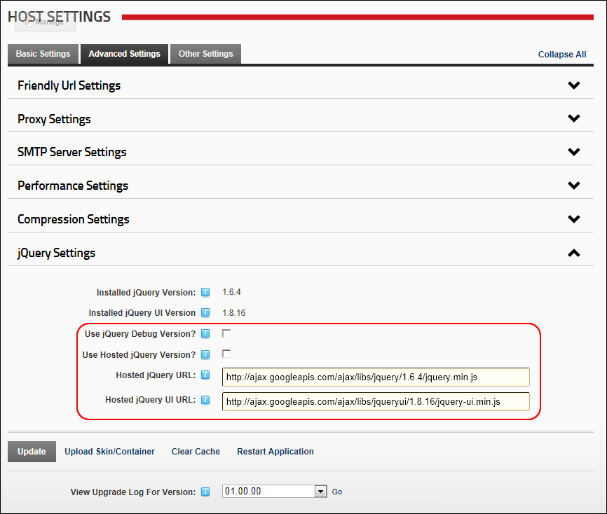

Setting the JQuery Settings
How to set the JQuery Settings for extensions which use jQuery. This popular JavaScript library for building current interactive user experiences.
- Navigate to Host >
 Host Settings.
Host Settings.
- Select the Advanced Settings tab.
- Expand the JQuery Settings section.
- At Installed jQuery Version, view the version string embedded in the local jQuery script.
- At Installed jQuery UI Version, view the version string embedded in the local jQuery UI script.
- At Use jQuery Debug Version?, select from these options:
- to use the standard jQuery script file.
- to use a minified version which significantly reduces the size of the JavaScript file, but decreases readability of the JavaScript.
- At Use Hosted jQuery Version?, select from these options:
- to use the URL entered in the Hosted jQuery URL field for the jQuery file.
- to use local copies of the file.
- In the Hosted jQuery URL text box, enter the full URL for the jQuery script. By default this is set to the latest jQuery minified script hosted on Google's CDN servers for optimum performance.
- In the Hosted jQuery UI URL text box, enter is the full URL for the jQuery UI script. By default this is set to the latest jQuery UI minified script hosted on Google's CDN servers for optimum performance

-
Click the Update button.